CSE138, Lecture on Youtube: https://www.youtube.com/playlist?list=PLNPUF5QyWU8O0Wd8QDh9KaM1ggsxspJ31 by Professor Lindsey Kuper, UC Santa Cruz
Martin Kelppmann's definition:
Different philosophies on dealing with failures:
| Cloud Computing | High Performance Computing (HPC) |
|---|---|
| Working around partial failures & expecting those kinds of failures | Treat potential failures as total failures |
| Performs checkpointing (if a problem occurs, then you rollback to your last checkpoint) |
Ways of failures:
Sample situations of failure. Say there are two machines m1 & m2 and m1 sends message to m2 and m2 performs some computation replies back to m1
In above situations, even though they are different from each other, from m1's point of view they are indistinguishable. Now consider the following situations:
Again from m1's point of view, all these situtations are indistinguishable
Hence, If you send a request to another node and don't receive a response, it is impossible to know whey (without global knowledge of the system)
Some other situations that could occur (Byzantine faults):
How can m1 deal with all these uncertainities? One way is to set timeouts. Post timeout assume failure. But then consider this scenario:
A distributed system is characterised by partial failure and unbounded latency
Why would you want a distributed system?
Clocks are used to
Computers have time-of-day clocks & monotonic
| time-of-day clocks | monotonic clocks |
|---|---|
| sync'd with NTP | only go forward, some kind of counter |
| Ok-ish for (1) | bad for (1) |
| bad for (2) | good for (2) |
monotonic clocks are preferred for distributed systems. There is an interesting cloudflare issue as they were using time-of-day clocks for calculating timeouts: https://blog.cloudflare.com/how-and-why-the-leap-second-affected-cloudflare-dns/
But what's the good way to mark points in time? There is really no good way with physical clocks
Both of the above clocks are physical clocks. But in distributed systems, we just can't get away with just having physical clocks. We need a different notion of clock, which is called logical clocks
| physical clocks | logical clocks |
|---|---|
| time-of-day & monotonic clocks | only measure ordering of events |
| which event happened before another |
Suppose A happened before B (A -> B), then we can say that:
This reasoning is good for:
AKA Space-time diagrams
Process is a line with a discrete beginning that goes on forever and events are dots on that line and time goes forward. It also represents causality:
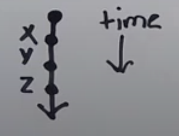
Consider three machines M0, M1, M2. Because these machines don't share memory, they communicate by sending messages to each other. Message send and receive are also events:
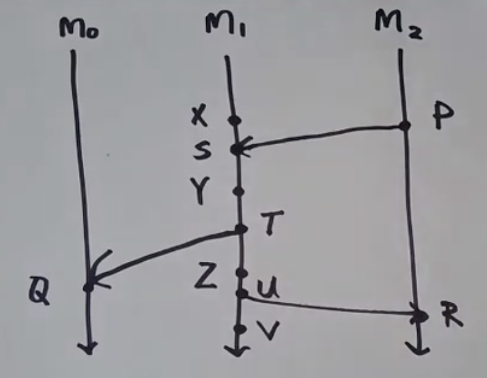
From above diagram, we can come up with a general definition for -> (happens-before relation):
Given two events A & B, we say A -> B ("A happened before B"), if any of the following is true:
A -> C, and C -> B, then A -> B (trransitive closure)So we can summarize happens-before relation by using lamport diagram:
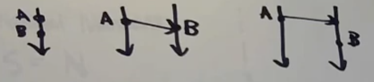
From above example, we can say P -> Y
Consider this lamport diagram:
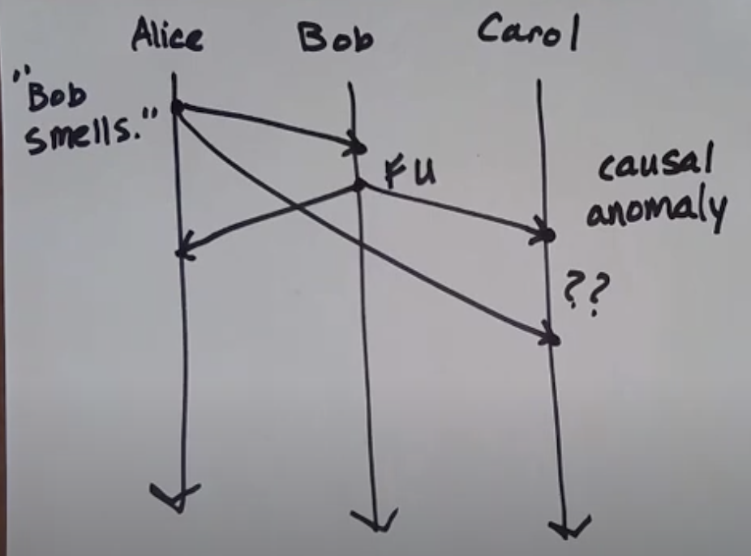
Alice sends message to both Bob & Carol: "Bob Smells"
Bob receives that message and then send FU to both Alice & Carol
Carol wonders why she received this message ?? This is what is known as causal anomaly
We can use the concept of happens-before to rule out such anomalies
Such anomalies could occur because of unbounded latency. It would really be helpful if we knew some fixed amount of time that it took for a message to get from Alice to intended recepient. Such kind of network where we know how much time it takes for a message to get where it gets is called a synchronous network. To be precise, A synchronous network is one wherre there exist an n such that no message takes longer than n units of time to be delivered.
There exists another network model called an asynchronous network. An asynchronous network is one where there exists no such n
But what is a model? A model is a set of assumptions that you use to build a system. Those assumptions might be more or less realistic
Let's looks at some examples of happens-before relation:
From above we can say that:
Q || RHappens-before relation is a particular kind of relation, called a partial order. It's actually a special kind of partial order
Definition: Partial orders are actually two things glued to each other:
a set S, together with ...
a binary relation, usually, but not always, written , that lets you compare things from S, and has these properties:
But happens-before relation is little weird:
A is event A i.e. an event A happens before itselfA happens before B and simultaneously B happens before A. Hence it is vacuously trueHence happens-before relation is called irreflexive partial order. It is not a real partial order
Example of a real partial order: set inclusion {a, b, c}
a is a subset of aIn partial order, every element is not related to every other element. And hence it is called partial order. A total order is where every element is comparable/related to every other element. For example, Natural numbers.
It is a simplest kind of logical clock, denotated by LC(<event>)
If A -> B, then LC(A) < LC(B). Lamport clocks are consistent with causality
Algorithm to assigning LCs to events:
Every process has a counter, initially 0
On every event, a process increments its counter
When sending a message, a process includes its current counter along with the message
When receiving a message, set your counter to max(local_counter, message_counter) + 1. Plus 1 is only if we consider message receive as an event
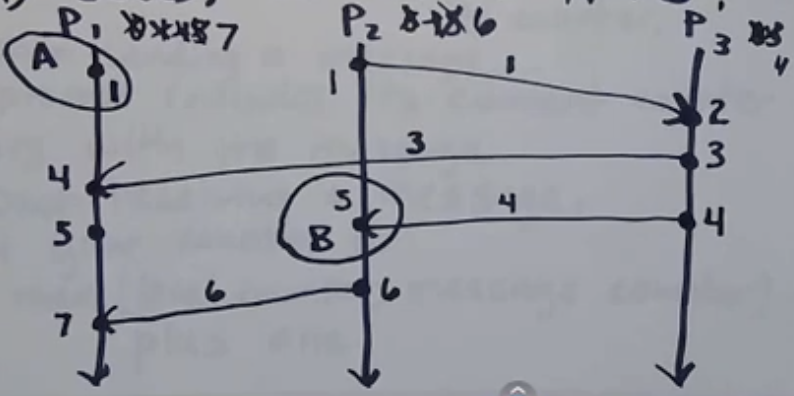
As seen above, LC for process P1 started with 0, then changed to 1 and then to 4, 5, 7 due to message communication with other processes. Note counter is sent as part of metadata
We know that if A -> B, then LC(A) < LC(B). But if LC(A) < LC(B), do we know if A -> B? No! As seen in above diagram, A and B are on different process lines and A had no communication with B. Hence we can say that LCs do not characterize causality
We can say that A -> B only if A can reach B via some path. For example, P2(6) can be reached from P2(1) via this path P2(1) to P3(2) to P3(3) to P3(4) to P2(5) to P2(6). Hence we can say that causality is graph reachability in spacetime
Reference: Schwartz & Mattern (1994): "Detecting causal relationships in distributed systemcs: In search of the Holy Grail"
Then what are LCs used for? let's take contrapositive of above LC-Causality Equation: if (LC(A) < LC(B)), then (A -> B)
As seen above, LCs do not characterize causality. This is where vector clocks come in. VCs are consistent with causality and characterize causality
A vector clock (VC) is just a sequence of integers
[1, 12, 4] & [7, 0, 2]. Then pointwise max is [7, 12, 4]So following is true for VC: A -> B VC(A) < VC(B)
But then how do we compare to VCs?
VC(A) < VC(B), when if for every index (i), VC(A)i VC(B)i and VC(A) VC(B). Examples:
VC(A) = [2, 2, 0] & VC(B) = [3, 2, 0]
VC(A) = [2, 2, 0] & VC(B) = [1, 2, 3]
VC(A) || VC(B)Let's look at lamport diagram:
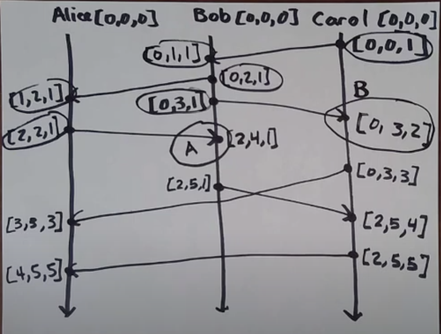
Receving vs Delivery of messages:
An anomaly is a run that violates the property that we want to have to be true
Consider FIFO delivery. If a process sends message M2 after message M1, any process delivering both, delivers M1 first. Here's how a FIFO anomaly will looks like:
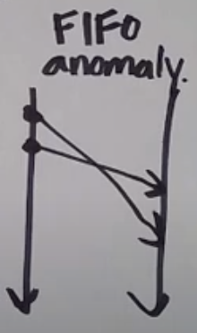
There is also causal delivery. If M1's send happens before M2's send, then M1's delivery happens before M2's delivery
FIFO violation is also causal delivery violation
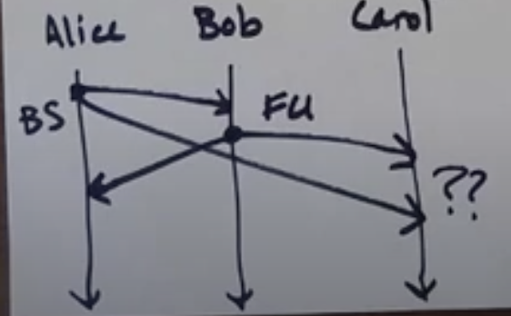
Totally-Ordered delivery: If a process delivers message M1, then M2, then all processes delivering both M1 and M2 delivers M1 first
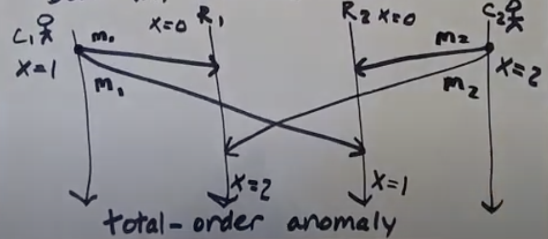
Consider two clients (C1, C2) and two replica keystores (R1, R2)
C1, updates value of X to 1 and then to 2. And C2, updates value of X to 2 and then to 1
This is total-order anomaly. Same messages were delivered in different order by C1 & C2
In below chart, FIFO anomaly is not a violation of totally ordered delivery, as there is only single process delivering messages. Note in above definition we need more than one delivering process to know if there is TO (total order) anomaly:
How to provide delivery guarantees?
Guaranteeing causal delivery also guarantees FIFO delivery
Following is a delivery guarantee chart from bottom providing no guarantee to top being complete guarantee:
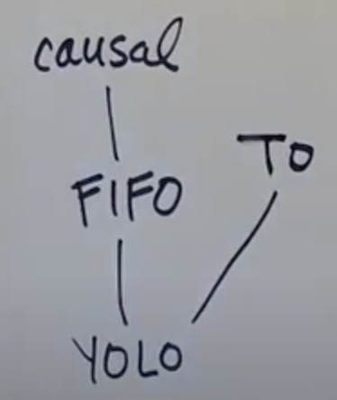
YOLO: Just symobilises on guarantee
Guaranteeing causal delivery guarantees FIFO delivery
But guaranteeing TO delivery doesn't guarantee neither FIFO nor causal delivery
We need some other kind of delivery which guarantees both TO & Causal delivery
From above heirarchy we can also deduce that if there is FIFO anomaly, then there is also Causal anomaly
Typical approach: Sequence numbers = Messages get tagged with a sequence number from the send and a sender ID
Sender increments its sequence number (SN) after sending
If a received message's SN is the SN+1 of the previously delivered message from that sender, deliver it! Otherwise, queue it up for later
Above is one approach. Some issues with above approach:
Another way is acknowledgements! Receiving process replies with ack message.
We can use vector clocks to rule out causal anomaly
By only having to track message sends, vector clocks can rule out causal anomaly. This is the implementation for causal broadcast
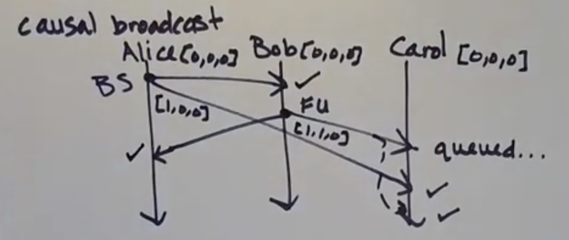
Causal Broadcast Algorithm:
If a message sent by P1 is delivered at P2, increment P2's local clock in the P1's position
If a message is sent by a process, then first increment its own position in its local clock, and include the local clock along with the message
A message sent by process P1 is only delivered at P2 if:
Here's another example:
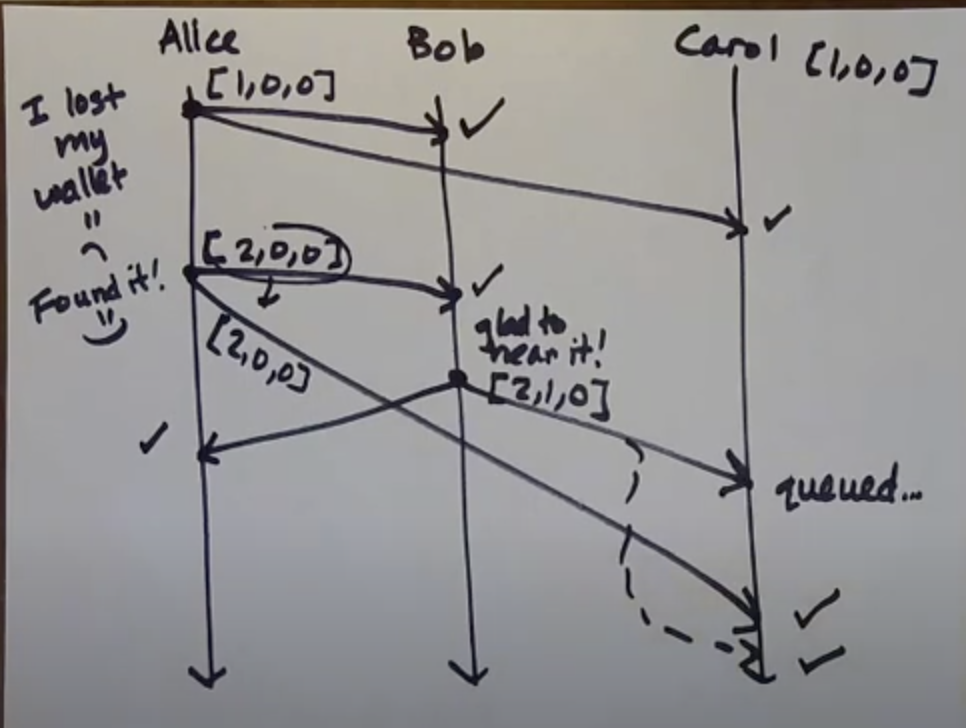
Causal delivery doesn't rule out TO anomalies! As seen below causal broadcast algorithm works fine, but there is TO anomaly
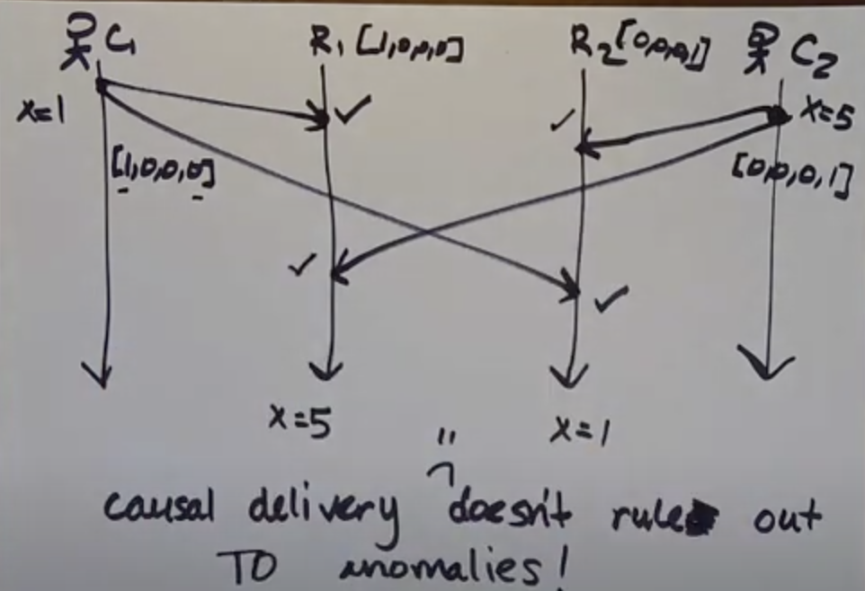
Hence if we need both causal delivery and TO delivery, then we need some thing other than VC to ensure both